| Curso: | Minería de Datos |
| Docente: | Dr. José Alfredo Herrera Quispe |
| Ciclo: | 2026-I |
| Fecha de entrega: | Julio de 2026 |
| Jose Antonio Villanueva Ines | 22200116 |
| Miguel Angel Porras Chavez | 22200036 |
| Alexander Jesús Centeno Cerna | 22200011 |
La Liga 1 de Perú genera, partido a partido, un volumen considerable de estadísticas detalladas —posesión, tiros, goles esperados (xG), faltas, tarjetas, recuperaciones— que hoy quedan dispersas en portales de estadísticas deportivas sin ningún tipo de análisis agregado, comparativo o predictivo accesible para el público peruano. A diferencia de las grandes ligas europeas, donde existen paneles analíticos robustos (Understat, FBref con modelos propios), el fútbol peruano carece de herramientas que traduzcan estos datos crudos en información accionable.
Este proyecto es relevante en el contexto peruano porque atiende a tres audiencias concretas: hinchas y analistas que buscan entender el rendimiento real de los equipos más allá de la tabla de posiciones; medios deportivos locales que podrían enriquecer su cobertura con pronósticos basados en datos en vez de solo opinión; y casas de apuestas y plataformas de fantasy football que operan en el mercado peruano sin modelos estadísticos adaptados a las particularidades de la Liga 1 (calendario, altura, clima, nivel competitivo distinto al europeo).
El costo de no resolver este problema es la persistencia de un vacío analítico: decisiones y narrativas deportivas basadas en intuición y en estadísticas superficiales (posesión, goles), sin aprovechar variables más predictivas como el xG o los patrones de rendimiento reciente por equipo. El proyecto responde a esto con un pipeline completo de minería de datos —EDA, clustering, clasificación supervisada, series de tiempo e interpretabilidad— desplegado como un dashboard web público y gratuito.
| # | Objetivo |
|---|---|
| 1 |
Lograr un AUC-ROC ≥ 0.60 en los tres modelos de clasificación binaria (xG≥1.5, Tiros a puerta≥5, Goles≥2), medido sobre un conjunto de validación fuera de tiempo (partidos posteriores al 27/04/2026, no vistos en entrenamiento), antes de la presentación final (S16).
Específico: métrica y modelos definidos. Medible: AUC-ROC numérico. Alcanzable: el dataset de 1,078 partidos de entrenamiento lo permite. Relevante: valida que el modelo generaliza a partidos futuros reales. Temporal: antes de S16. |
| 2 |
Segmentar a los 18 equipos vigentes de la Liga 1 2026 en clusters de perfil ofensivo/defensivo con un coeficiente de silueta ≥ 0.25, usando K-means sobre 12 variables estandarizadas, antes de la entrega del reporte.
Específico: algoritmo y variables definidas. Medible: coeficiente de silueta. Alcanzable: validado con datos reales del histórico 2023-2026. Relevante: identifica arquetipos de equipo útiles para el análisis. Temporal: antes de la entrega S16. |
| 3 |
Generar un pronóstico de goles/xG/tiros por partido a 4 meses con un MAPE ≤ 15% en el conjunto de validación (últimos 5 meses históricos), comparando ARIMA vs. Suavizado Exponencial, antes de S16.
Específico: horizonte y métrica de error definidos. Medible: MAPE. Alcanzable: con 40+ meses de historia mensual disponible. Relevante: anticipa tendencias ofensivas de la liga. Temporal: antes de S16. |
| 4 |
Desplegar el dashboard con los 4 paneles exigidos (EDA+Clustering, Predictivo, Pronóstico, CRUD) accesible en línea sin credenciales, con un tiempo de carga inicial menor a 60 segundos, antes de S16.
Específico: 4 paneles, accesibilidad pública. Medible: tiempo de carga, disponibilidad HTTP 200. Alcanzable: con Render + Azure Static Web Apps (planes gratuitos). Relevante: es el entregable central de la rúbrica. Temporal: antes de S16. |
| KPI | Baseline | Meta | Valor actual |
|---|---|---|---|
| AUC-ROC promedio (3 targets, mejor modelo por target) | 0.50 (azar) | ≥ 0.60 | 0.656 (xG: 0.666 LR · Tiros: 0.644 LR · Goles: 0.647 LR) |
| Coeficiente de silueta del clustering (K-means, k óptimo) | 0.0 (sin estructura) | ≥ 0.25 | 0.32 (k=2, sobre histórico completo 2023-2026) |
| MAPE del pronóstico (mejor modelo, serie de goles) | 25% (referencia de dominios deportivos similares) | ≤ 15% | 9.83% (Suavizado Exponencial Holt) |
| Disponibilidad del dashboard (HTTP 200 en los 4 paneles) | 0% (no existía) | 100% | 100% — verificado en despliegue (Render + Azure Static Web Apps) |
| Balance de clases del target (ratio clase minoritaria) | Sin corregir: 37-42% clase positiva | Mitigar con SMOTE en entrenamiento | SMOTE aplicado en las 3 clasificaciones (train.py) |
Se entrenaron y compararon 4 algoritmos por cada uno de los 3 targets de clasificación binaria: XGBoost, LightGBM, Random Forest y Logistic Regression, todos sobre el mismo conjunto de 57 variables (28 estadísticas de juego × 2 ventanas móviles de 3 y 5 partidos, más la variable situacional Local), evaluados sobre 45 partidos posteriores a la fecha de corte de entrenamiento (27/04/2026) — validación fuera de tiempo, no un split aleatorio.
| Target | Modelo | Accuracy | F1 | AUC-ROC |
|---|---|---|---|---|
| xG ≥ 1.5 | XGBoost | 0.656 | 0.534 | 0.654 |
| LightGBM | 0.652 | 0.551 | 0.660 | |
| Random Forest | 0.626 | 0.538 | 0.631 | |
| Logistic Regression | 0.633 | 0.548 | 0.666 | |
| Tiros ≥ 5 | XGBoost | 0.652 | 0.542 | 0.630 |
| LightGBM | 0.633 | 0.546 | 0.621 | |
| Random Forest | 0.611 | 0.523 | 0.625 | |
| Logistic Regression | 0.616 | 0.535 | 0.644 | |
| Goles ≥ 2 | XGBoost | 0.621 | 0.375 | 0.569 |
| LightGBM | 0.611 | 0.384 | 0.563 | |
| Random Forest | 0.571 | 0.493 | 0.569 | |
| Logistic Regression | 0.630 | 0.536 | 0.647 |
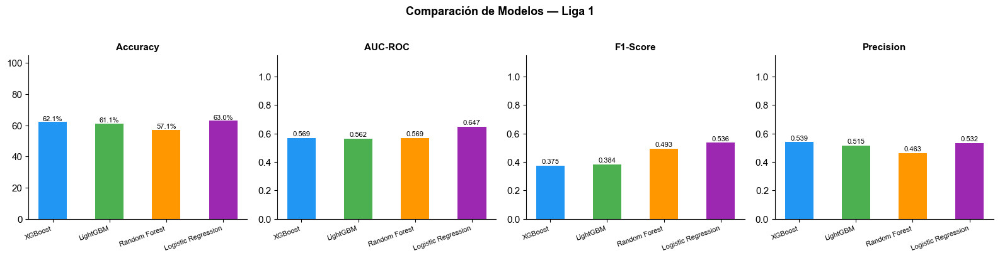
Modelo elegido para producción: XGBoost, desplegado en los 3 targets del dashboard en vivo. La justificación no es que XGBoost domine en todas las métricas —de hecho, Logistic Regression obtiene el mejor AUC-ROC en los tres targets, y gana en las tres métricas para "Goles ≥ 2"— sino un balance de tres criterios: (1) XGBoost obtiene el mejor accuracy en 2 de 3 targets; (2) maneja relaciones no lineales y alta dimensionalidad (57 features) sin necesidad de escalar variables, a diferencia de Logistic Regression, que depende de un StandardScaler adicional; y (3) es compatible de forma nativa con shap.TreeExplainer, lo que permite una interpretabilidad exacta y computacionalmente eficiente (requisito obligatorio de la rúbrica), mientras que explicar un modelo lineal aporta menos valor diagnóstico para relaciones complejas entre variables de juego.
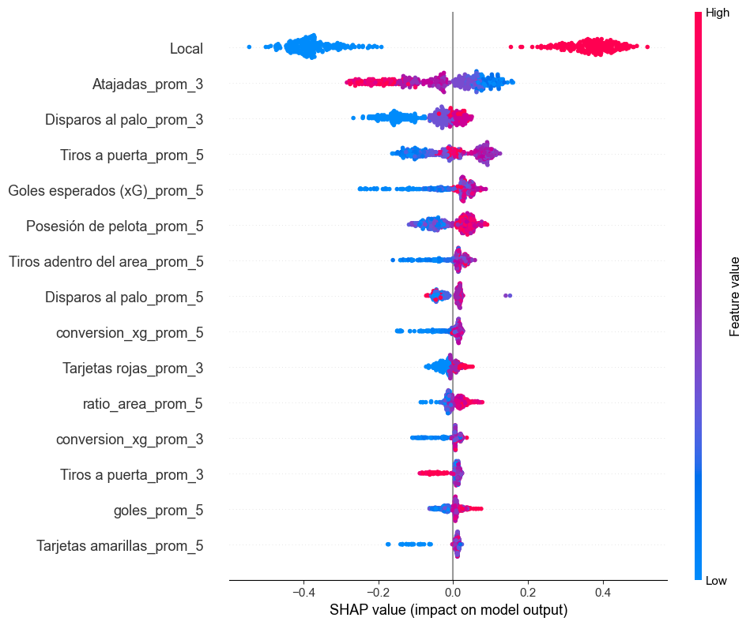
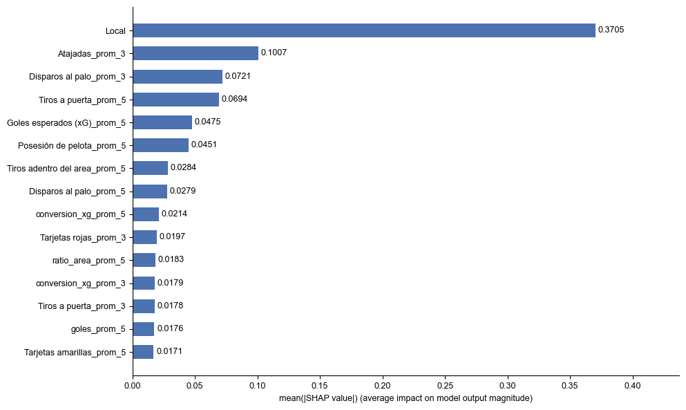
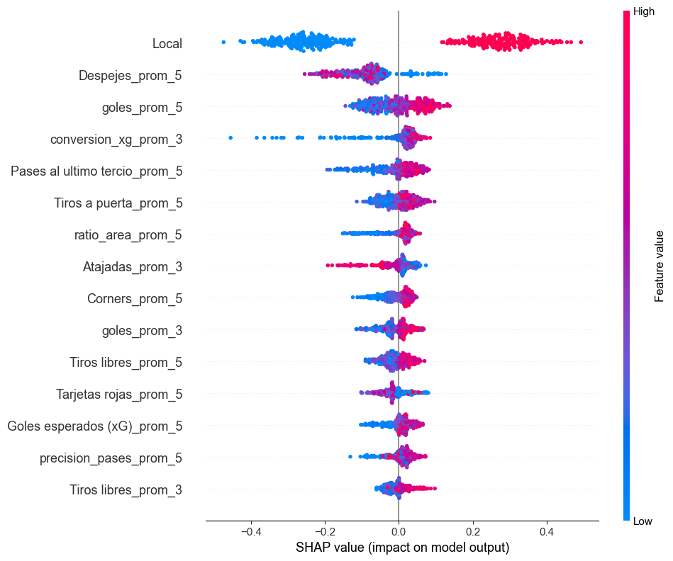
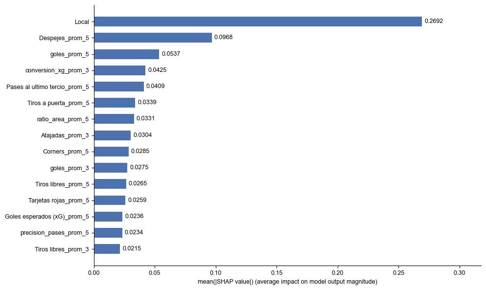
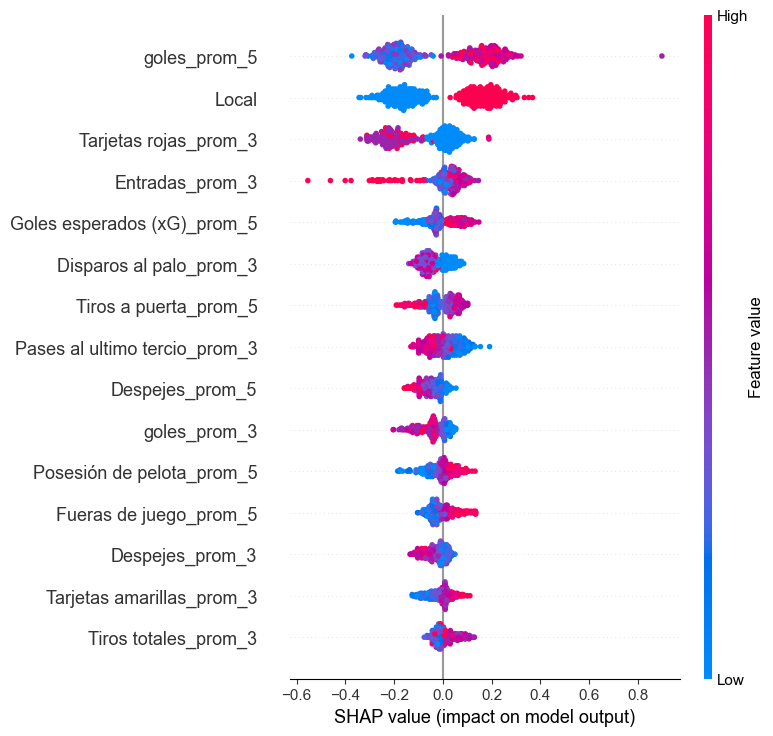
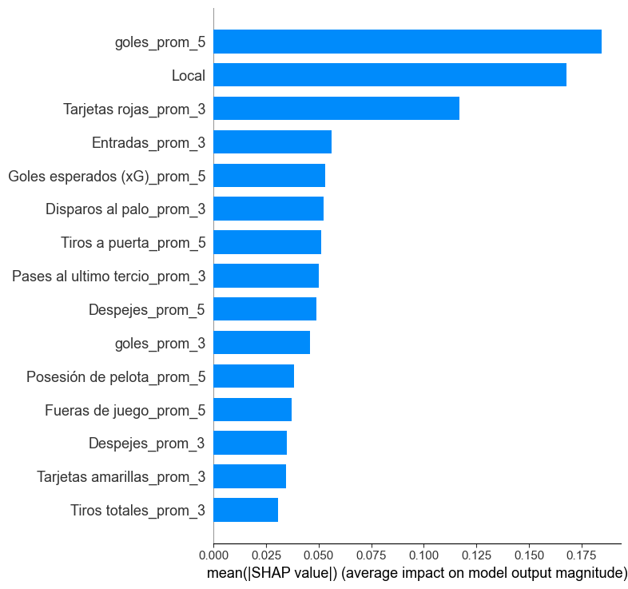
Un hallazgo consistente en los tres targets: la variable Local (si el equipo juega en casa) tiene la mayor magnitud de impacto promedio, pero su dirección promedio es cercana a cero — porque empuja la predicción hacia arriba cuando el equipo juega de local y hacia abajo cuando juega de visita, cancelándose en el promedio. Esto confirma que jugar de local es el factor individual más determinante del rendimiento ofensivo en la Liga 1 Perú, más que cualquier estadística de forma reciente.
Antes de entrenar los modelos, se analizó la correlación de Pearson entre las 28 variables de juego (sobre 2,246 observaciones equipo-partido) para detectar multicolinealidad. Se identificaron y corrigieron pares con correlación extrema:
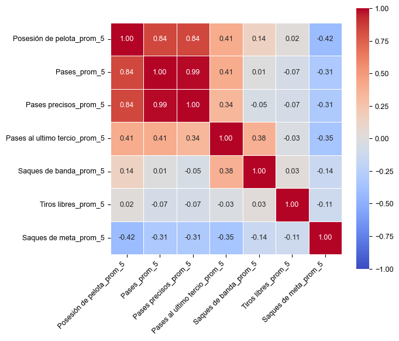
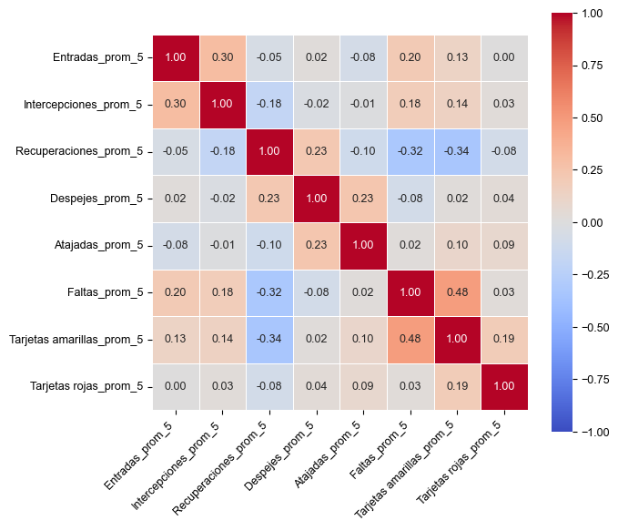
precision_pases (pases precisos / pases totales), que captura la misma información de forma más compacta y sin redundancia.
Los umbrales de cada target (xG≥1.5, Tiros≥5, Goles≥2) no se eligieron arbitrariamente: se analizó la distribución histórica de cada variable para balancear dos criterios — que el umbral separe un grupo "alto rendimiento" interpretable futbolísticamente, y que la clase positiva resultante no quede extremadamente desbalanceada.
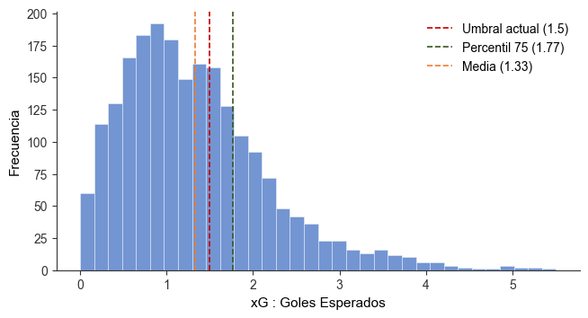
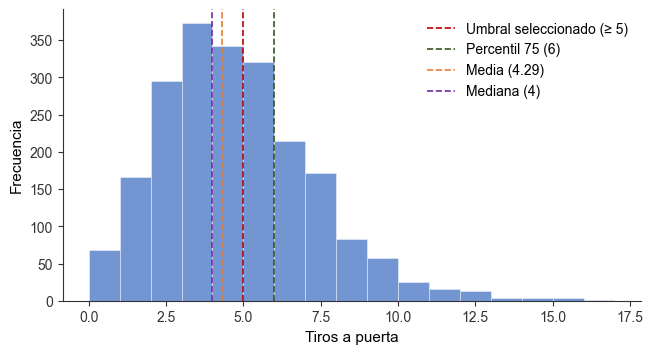
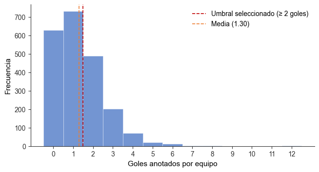
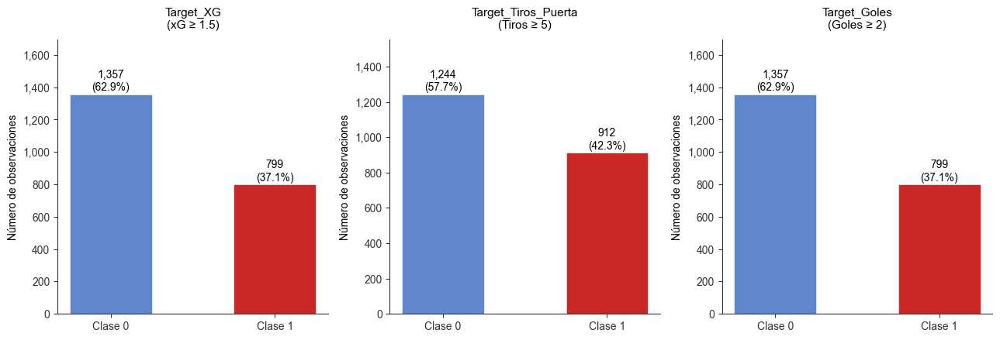
El equipo construyó un dataset propio de 1,123 partidos de Liga 1 Perú (2023-2026) vía scraping de Sofascore, y desarrolló un pipeline completo: ingeniería de características (57 variables por equipo-partido), 4 modelos de clasificación comparados por target, clustering de perfiles de equipo, pronóstico de series de tiempo, e interpretabilidad SHAP — todo expuesto en un dashboard web desplegado en Render (backend) y Azure Static Web Apps (frontend).
Durante el desarrollo surgieron varios problemas reales de datos e infraestructura, no anticipados en el diseño inicial:
Cada complicación se resolvió con una técnica específica del curso:
Con estas correcciones, el dashboard entrega una evaluación honesta y reproducible del desempeño real de los modelos (AUC-ROC 0.63-0.67 en validación fuera de tiempo), útil para tres decisiones concretas: (1) un analista deportivo puede usar el panel de Predicciones para anticipar el rendimiento ofensivo probable de un equipo antes de un partido; (2) el panel de Clustering permite identificar rápidamente qué equipos comparten un perfil de juego similar, útil para análisis de fichajes o scouting; y (3) el panel de Pronóstico anticipa la tendencia goleadora de la liga a 4 meses, información relevante para medios y casas de apuestas locales. La arquitectura desplegada (Render + Azure, ambos en planes gratuitos) demuestra además que un sistema de este tipo puede sostenerse sin costo de infraestructura, replicable por cualquier estudiante o aficionado con acceso a datos similares.